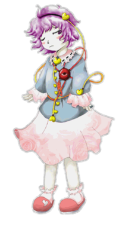

- Welcome to Touhou Wiki!
- Please register to edit. For assistance, check in with our Discord server or IRC channel.
Satori Komeiji
- "Satori" redirects here. For the species, see Satori (Species).
Satori Komeiji komeːd͡ʑi satoɽi (♫) | |
|---|---|
|
Satori Komeiji in Subterranean Animism The Girl Even the Vengeful Spirits FearMore Character Titles | |
| Species | |
| Abilities |
Reading minds |
| Occupation |
Master of the Palace of the Earth Spirits, Anonymous book writer. |
| Location | |
Music Themes | |
| |
Appearances | |
| Official Games | |
| |
| Print Works | |
| |
Satori Komeiji (古明地 さとり Komeiji Satori) is the Mistress of the Palace of the Earth Spirits after the underground city was separated from Hell. Her ability to read minds causes various youkai and spirits to fear her, but makes her loved by the animals that normally can't be understood. With these animals as pets, she manages the ruins of the Hell of Blazing Fires where her home stands.
General Information[edit]
She first appeared as Stage 4 Boss in Subterranean Animism, then she was Stage 9 target in Double Spoiler.
Satori Komeiji is, as her namesake suggests, a satori, which means she has the power to read minds. The satori are particularly detested, even among the other youkai currently living in Former Hell. Her palace never gets visitors, because no one wants to visit her. Even Kanako Yasaka felt the need to go behind her back to get control of the Hell of Blazing Fires, as it would be impossible to negotiate with her.
Personality[edit]
Not much is known about Satori's actual personality. When the heroine arrives at the Palace during the events of Subterranean Animism, she is very suspicious, and decides to fight against her by using danmaku patterns in the heroine's own mind (or that of her partner). However, she appears to be loved by animals, as they can't normally be understood in the first place.
Ability[edit]
- Reading minds
As a satori, Satori is capable of reading the heart and mind of any living creature, even vengeful spirits. This ability works only on those within her immediate presence,[1] and doesn't work at all on her sister, Koishi.
- Hypnotism
Satori has limited hypnotic abilities, allowing her to bring traumatic memories to the surface of a person's mind or induce amnesia[2].
- Copying patterns
After successfully "awakening trauma" through her hypnotic abilities[3], Satori is able to tap into her target's memories and use patterns they have seen in the past - i.e. Spell Cards that the player character has fought against in a previous game. This is a true recreation, not an illusion, but is not completely exact[4] (possibly due to flaws in the source memories, or Satori lacking the original users' abilities).
Backstory[edit]
When the Yamas moved the actual site of Hell away from the Underground, there were many vengeful spirits left over that needed to be controlled. The Palace of the Earth Spirits was built on top of the ruins of the Hell of Blazing Fires, and with Satori as the mistress of the palace, there was no chance of any kind of revolt. Eventually, Satori delegated various roles in the maintenance of the Hell of Blazing Fires to the many pets that had assembled in the palace.
Character Basis[edit]
Name[edit]
Her surname Komeiji (古明地, lit. "ancient-bright earth") is an actual Japanese surname, seen mainly in the Yamanashi prefecture. The kanji 地 in Komeiji is also used in the Japanese title of Subterranean Animism (東方地霊殿). Her given name Satori (さとり) is homophonous with the name of her species, satori (覚), but written in hiragana. "Satori" could also be interpreted as satori (悟り, lit. "understanding" or "enlightenment").
Design[edit]
Has short, purple hair with a black hairband and purple eyes. A red "third eye" is positioned over her heart, with cords running to her head and wrists. Wears a blue shirt with yellow heart buttons and pink collar, a pink skirt with faint flowery pattern and pink slippers.
Story[edit]
Games[edit]
| Attention: This section is a stub and it needs expanding with more information related to the section's topic. If you can add to it in any way, please do so. |
- Subterranean Animism
At some point in the past she started living in the Palace of the Earth Spirits, right above the Hell of Blazing Fires. However, her ability caused her to be shunned by humans and most Youkai. Over time, the only other residents in the Palace were her pets, who welcomed Satori's ability to read minds. Due to the difficulties in managing the Hell of Blazing Fires, she started letting the pets do some of the work.
During the events of Stage 4 in Subterranean Animism, the Heroine (from above ground) invaded her home. The Heroine inquired Satori about the evil spirits and the geyser that brought them above ground; suspicious, the Youkai read the Heroine's heart, only to find that the above-ground human does not care about such things. Thus, Satori decided to test their strength. After the encounter, she permitted the Heroine passage towards the Hell of Blazing Fires to ask her pets about their supposed problem.
Spin-off[edit]
- Double Spoiler
In Double Spoiler, Satori appeared as a stage 9 target, where she uses a few spell cards and had Aya Shameimaru and Hatate Himekaidou take photos of her and her danmaku.
- Hopeless Masquerade
Satori made a background cameo appearance in Hopeless Masquerade on the Palace of Earth Spirits and Youkai Tanuki Forest stage. She is seen standing around.
Literature[edit]
- Wild and Horned Hermit
| Attention: This section is a stub and it needs expanding with more information related to the section's topic. If you can add to it in any way, please do so. |
Relationships[edit]
Satori keeps many pets, including blaze cats and hell ravens, which also oversee the general management of the Hell of Blazing Fires. Chief amongst those pets are Rin Kaenbyou, the blaze cat in charge of the evil spirits, and Utsuho Reiuji, the hell raven who manages the depths of the Hell of Blazing Fires.
The other important relationship for Satori is her sister, Koishi. Satori cares about Koishi, and wants her sister to open her heart to others once again.
Gallery[edit]
Spell Cards[edit]
| Name | Translated | Comments | Games | Stage | ||
|---|---|---|---|---|---|---|
| Total: 26 | ||||||
| 想起「テリブルスーヴニール」 | Recollection "Terrible Souvenir" | SA GoM |
St. 4: E/N ---- | |||
| 想起「恐怖催眠術」 | Recollection "Terrifying Hypnotism" | SA | St. 4: H/L | |||
| 想起「二重黒死蝶」 | Recollection "Double Black Death Butterfly" | Derived from Yukari Yakumo's Sinister Spirits "Double Black Death Butterfly" (PCB) | SA | St. 4: E/N/H/L | ||
| 想起「飛行虫ネスト」 | Recollection "Flying Insect's Nest" | Derived from Yukari Yakumo's Fantasy Nest "Flying Noctilucae's Nest" (SWR) | SA | St. 4: E/N/H/L | ||
| 想起「波と粒の境界」 | Recollection "Boundary of Wave and Particle" | Derived from Yukari Yakumo's Border Sign "Boundary of Wave and Particle" (StB) | SA | St. 4: E/N/H/L | ||
| 想起「戸隠山投げ」 | Recollection "Mt. Togakushi Toss" | Derived from Suika Ibuki's Gather Sign "Mt. Togakushi Toss" (IaMP and SWR) | SA | St. 4: E/N/H/L | ||
| 想起「百万鬼夜行」 | Recollection "Night Parade of a Million Demons" | Derived from Suika Ibuki's "Night Parade of a Million Demons" (IaMP and StB) | SA | St. 4: E/N/H/L | ||
| 想起「濛々迷霧」 | Recollection "Deep Fog Labyrinth" | Derived from Suika Ibuki's Ghastly Air "Deep Fog Labyrinth" (StB and SWR) | SA | St. 4: E/N/H/L | ||
| 想起「風神木の葉隠れ」 | Recollection "Wind God's Leaf-Veiling" | Derived from Aya Shameimaru's Wind God "Wind God's Leaf-Veiling" (MoF) | SA | St. 4: E/N/H/L | ||
| 想起「天狗のマクロバースト」 | Recollection "Tengu's Macroburst" | Derived from Aya Shameimaru's Thrust Sign "Tengu's Macroburst" (SWR) | SA | St. 4: E/N/H/L | ||
| 想起「鳥居つむじ風」 | Recollection "Torii Whorl-Wind" | Derived from Aya Shameimaru's Whirlwind "Torii Whorl-Wind" (SWR) | SA | St. 4: E/N/H/L | ||
| 想起「春の京人形」 | Recollection "Spring Kyoto Dolls" | Derived from Alice Margatroid's Elegant Sign "Spring Kyoto Dolls" (PCB) | SA | St. 4: E/N/H/L | ||
| 想起「ストロードールカミカゼ」 | Recollection "Straw Doll Kamikaze" | Derived from Alice Margatroid's Curse Sign "Straw Doll Kamikaze" (StB) | SA | St. 4: E/N/H/L | ||
| 想起「リターンイナニメトネス」 | Recollection "Return Inanimateness" | Derived from Alice Margatroid's Magipulation "Return Inanimateness" (IaMP, IN and SWR) | SA | St. 4: E/N/H/L | ||
| 想起「マーキュリポイズン」 | Recollection "Mercury Poison" | Derived from Patchouli Knowledge's Metal & Water Sign "Mercury Poison" (EoSD) | SA | St. 4: E/N/H/L | ||
| 想起「プリンセスウンディネ」 | Recollection "Princess Undine" | Derived from Patchouli Knowledge's Water Sign "Princess Undine" (EoSD) | SA | St. 4: E/N/H/L | ||
| 想起「賢者の石」 | Recollection "Philosopher's Stone" | Derived from Patchouli Knowledge's Fire Water Wood Metal Earth Sign "Philosopher's Stone" (EoSD, IaMP and SWR) | SA | St. 4: E/N/H/L | ||
| 想起「のびーるアーム」 | Recollection "Exteeeending Aaaaarm" | Derived from Nitori Kawashiro's Kappa "Exteeeending Aaaaarm" (MoF) | SA | St. 4: E/N/H/L | ||
| 想起「河童のポロロッカ」 | Recollection "Kappa's Pororoca" | Derived from Nitori Kawashiro's Water Sign "Kappa's Pororoca" (MoF) | SA | St. 4: E/N/H/L | ||
| 想起「光り輝く水底のトラウマ」 | Recollection "Trauma in the Glimmering Depths" | Derived from Nitori Kawashiro's Drown "Trauma in the Glimmering Depths" (MoF) | SA | St. 4: E/N/H/L | ||
| 脳符「ブレインフィンガープリント」 | Brain Sign "Brain Fingerprint" | DS | St. 9 | |||
| 心花「カメラシャイローズ」 | Heart Flower "Camera-Shy Rose" | DS | St. 9 | |||
| 想起「うろおぼえの金閣寺」 | Recollection "Vague Recollection of Kinkaku-ji" | Derived from Kaguya Houraisan's New Impossible Request "Seamless Ceiling of Kinkaku-ji" (StB) | DS | St. 9 | ||
| 地霊符「マインドステラスチール」 | Earth Spirit Sign "Mind Stellar Steal" | Co-owner with Utsuho | VD | Nightmare Wednesday - 1 | ||
| 「パーフェクトマインドコントロール」 | "Perfect Mind Control" | Co-owner with Koishi | VD | Nightmare Wednesday - 3 | ||
| 地妖符「エゴの式神」 | Earth Ghostly Sign "Shikigami of the Ego" | Co-owner with Ran | VD | Nightmare Wednesday - 5 | ||
Additional Information[edit]
- In Subterranean Animism, with the exception of her first spell card, all of Satori's spell cards are based on, if not directly stolen from, those of the players' trauma of their partners.
- According to the Grimoire of Marisa, she can only read what the opponent is thinking currently. Due to this limitation, she uses hypnosis in order to dig into their memories and recover their trauma.
- Satori is currently the only Touhou Windows character who appears before her subordinate is introduced.
- Satori and Koishi's design may have been inspired by the 1939 painting by Mexican painter Frida Kahlo titled "The Two Fridas". The subject is essentially two identical women (sisters/clones/twins...) with visible hearts and external arteries that seem to connect and wrap around their shoulders and arms.
- If her and Koishi's color schemes are inverted, they will both somewhat resemble each other.
- With seventy-six spell cards total in Subterranean Animism (one spell card of her own, plus three cards from one of the six player's partner, across four difficulties), Satori has more spell cards in a single title than any other character in the series. The only characters who come close are Okina Matara, with forty-six cards total in Hidden Star in Four Seasons (five first Stage 6 cards, plus four for each season final cards, across four difficulties, plus ten cards from Extra Stage across one difficulty), Kaguya Houraisan, with forty-one cards total in Imperishable Night, and each of the Three Fairies of Light individually, with forty cards total each in Fairy Wars.
- Satori's theme song is likely a reference to one of the background songs from the Neon Genesis Evangelion anime, "She Said Don't Make Others Suffer For Your Personal Hatred". It shares the same phrase and progression in the chorus, as well as many other musical similarities with Satori's theme, and the piece of music is originally used during a battle with the angel Sahaqiuel, a giant red eye floating in the sky with the ability to jam communications. This is also likely due to the highly psychological nature of Neon Genesis Evangelion.
Fandom[edit]
Official Profiles[edit]
|  | ○４面ボス 怨霊も恐れ怯む少女 古明地さとり（こめいじ さとり） 種族：さとり 地霊殿の主。 地底都市が地獄から切り離されたが、未だ地獄の施設があった場所には多くの浮かばれない霊達が残っており、それらを管理する者を必要とした。 灼熱地獄跡の上には地霊殿が建てられ、そこに彼女が住む事となった。 しかし、逆に心を読む能力が言葉を持たない動物達に好かれ、地霊殿には火焔猫、地獄鴉を始めとするペット達が溢れる屋敷となっていた。 ペットの多さに今度は灼熱地獄跡がまともに管理しきれなくなり、色んな管理をペットに任せるようになったのである。 ペットの管理をまた別のペットに。 だが、地上から訪れる筈のない人間が現れ、怨霊や間欠泉の異変を聞かされた時は大いに驚いた。 怨霊の管理はお燐に任せ、灼熱地獄の火力調節は空に任せていた。 もしかしたら、目の前の人間が嘘を吐いて何かを企んでいるのかも知 人間達の心の中には、怨霊や間欠泉といった情報は殆ど無かったのである。 |
Stage 4 Boss The Girl Even the Vengeful Spirits Fear Satori Komeiji Race: Satori The master of the Palace of the Earth Spirits. The underground city was separated from Hell, but a number of uncontrollable spirits remained in the former facilities of Hell, so there was a need to control them. The Palace of the Earth Spirits is built above what was the Hell of Blazing Fires, and this is where she took up residence. Since she can read others' minds, all sorts of youkai and spirits fear her, so eventually people stopped visiting the Palace of the Earth Spirits. On the other hand, her power makes her well-loved by animals that don't speak, so eventually the premises began to overflow with many pets, starting with blaze cats and hell ravens. Her great number of pets made it difficult to manage the Hell of Blazing Fires, so she entrusted parts of its management to some of her pets. Her pets would oversee other pets. However, what shouldn't have happened did: a human came from above ground, and she was surprised when they started asking about vengeful spirits and a geyser. Satori left Orin in charge of the vengeful spirits and Utsuho in charge of the Hell of Blazing Fires. They were both loyal to Satori, so they shouldn't have done any harm. She believed there was no way they'd start some sort of incident. She thought that perhaps the human before her was spouting off lies and trying to trick her, so she read her heart and was surprised again by what she saw. There was almost nothing to be seen inside the humans' mind about the vengeful spirits or the geysers. Suspicious, Satori decided to test them. |
Official Sources[edit]
- 2008/08/16 - Subterranean Animism - Settings.txt (official profile)
- 2009/07/28 - The Grimoire of Marisa - Satori Komeiji's Spell Card
- 2010/03/14 - Double Spoiler - Stage 9 Spell Cards
- 2010/08/26 - Oriental Sacred Place - Chapter 10 (cameo)
- 2010/09/25 - Wild and Horned Hermit - Chapter 2 (cameo)
- 2012/04/27 - Symposium of Post-mysticism - Satori Komeiji
References[edit]
- ↑ Subterranean Animism: Reimu and Suika's Scenario - "(I knew it, she can't tell what I'm thinking up here. It's so far away, I'm in a safety zone.)"
- ↑ Double Spoiler: Memory Sign "Brain Fingerprint" - "When there's a trace of fear deep in your heart, that's trauma. It looks like it can get in the way during your day to day life..."
- ↑ The Grimoire of Marisa: Satori Komeiji's Spell Card - "Danmaku usually sealed within the innermost memories are aroused by this hypnosis. This girl can surely read people's minds, but not their memories. That is why this hypnosis is necessary to awaken these traumas."
- ↑ Subterranean Animism: Marisa and Nitori's Scenario - "(... oh, those were my danmaku. They were ever so slightly different, though.)"
| This page is part of Project Characters, a Touhou Wiki project that aims to write proper descriptions for all official characters of Touhou Project. Please keep the character page guidelines in mind when contributing. |